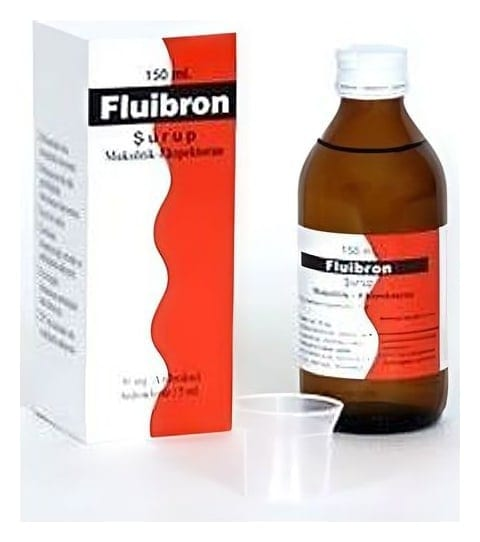

Fluibron 30 mg/5 ml Şurup, 150 ml

Ne için kullanılır
KT · Bölüm 1•FLUİBRON®, balgam salgısını sulandıran ve salgılanmasını kolaylaştıran balgam söktürücü bir ilaçtır. Bu sayede balgamın kolayca atılmasını sağlayarak solunum güçlüğünü giderir ve öksürüğü azaltır. •FLUİBRON®, 150 ml şurup içeren, bal rengi şişelerde, 5 ml’lik dereceli plastik kaşık ile birlikte sunulur. Renksiz şurup görünümündedir. •FLUİBRON®,
balgamın koyu ve yapışkan olması ile birlikte olan ani ve süreğen solunum yolu hastalıklarında balgam söktürücü olarak kullanılır. 2.